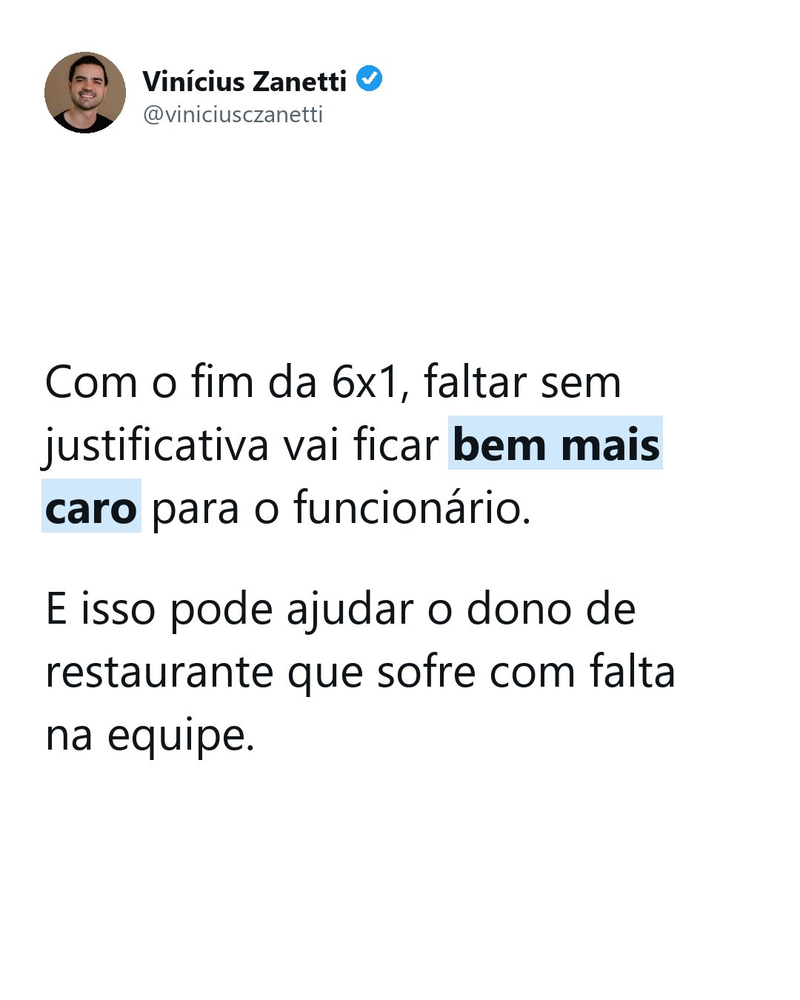

Falta sem justificativa na escala 5x2: por que pode custar três dias de salário
A lei que tira o descanso remunerado de quem falta é de 1949. Com dois repousos por semana a partir de 16 de dezembro, a mesma regra pesa mais. O que já está escrito, o que ainda é interpretação e o que o dono faz agora.
Publicado em 16/11/2026
Hamburgueria e pizzaria conhecem bem a cena: o funcionário não aparece na sexta, ninguém avisa, e quem cobre o buraco é o dono. Com a escala 5x2, que passa a valer em 16 de dezembro de 2026, essa falta pode ficar mais cara para quem falta. Pela regra atual do descanso semanal remunerado, a falta sem justificativa custa hoje dois dias de salário. Com duas folgas por semana, a mesma regra pode levar a três.
A conta foi publicada pelo consultor Vinícius Zanetti em outubro, com um aviso que continua valendo: o texto da mudança não detalha esse cálculo, e ainda pode haver regulamentação.

"Com a 5x2, uma falta sem justificativa pode custar 3 dias de salário, não 2."Vinícius Zanetti, no carrossel sobre a falta na escala 5x2
O que é o DSR e quando o funcionário perde?
DSR é o descanso semanal remunerado. Ele está na Lei 605, de 1949, que garante a todo empregado um repouso semanal remunerado de 24 horas seguidas, de preferência no domingo, e também a remuneração dos feriados.
O artigo 6º da mesma lei diz quando esse dinheiro deixa de ser pago: "Não será devida a remuneração quando, sem motivo justificado, o empregado não tiver trabalhado durante toda a semana anterior, cumprindo integralmente o seu horário de trabalho."
Na prática, quem falta sem justificativa perde duas coisas: o dia em que não trabalhou e o descanso remunerado daquela semana. Por isso Vinícius resume a regra de hoje assim: uma falta, dois dias a menos no salário.
A lei também lista o que conta como motivo justificado. Entre eles estão a doença do empregado devidamente comprovada, a falta ligada a acidente do trabalho, até três dias seguidos por casamento, os casos do artigo 473 da CLT e a ausência que a própria empresa aceitar como justificada.
O que muda com duas folgas por semana?
A Emenda Constitucional 141/2026 acabou com a escala 6x1. Segundo o Supremo Tribunal Federal, que manteve a data de 16 de dezembro em liminar publicada em 12 de novembro, a jornada passa a ser de 42 horas semanais, com direito a dois repousos semanais remunerados. A conta da escala, turno a turno, está na matéria Escala 5x2 em 16 de dezembro: o que muda na hamburgueria e na pizzaria.
O raciocínio do carrossel é este: se a semana passa a ter dois descansos remunerados, e a regra de 1949 continua a mesma, quem falta sem justificativa perde o dia parado e as duas folgas. São três dias.
O próprio artigo 6º tem um parágrafo que conversa com isso. Nas empresas com regime de trabalho reduzido, a frequência exigida corresponde ao número de dias em que o empregado tem de trabalhar. Na 5x2, são cinco.
Quanto a falta desconta do salário?
O carrossel usa um salário de exemplo de R$ 2.200. Dividido por 30, o dia vale R$ 73,33. As duas faltas da última linha caem em semanas diferentes, porque cada semana tem o seu descanso.
| Neste exemplo (salário de R$ 2.200) | Hoje (6x1) | Com 2 folgas |
|---|---|---|
| 1 falta na semana | 2 dias, R$ 146,67 | 3 dias, R$ 220,00 |
| 1 falta em semana com feriado | 3 dias, R$ 220,00 | 4 dias, R$ 293,33 |
| 2 faltas no mês, em semanas diferentes | 4 dias, R$ 293,33 | 6 dias, R$ 440,00 |
Na última linha, as duas faltas tiram R$ 440 de um salário de R$ 2.200. É 20% do mês. A coluna "Com 2 folgas" é a regra atual aplicada à semana nova, e não um cálculo previsto em lei. A linha do feriado também depende de como a semana e o feriado caem, e merece conferência com o contador.
Por que isso interessa ao dono do restaurante?
Porque a falta no restaurante não cai em qualquer dia. Cai na sexta e no sábado, quando o pedido aperta. Quem cobre é o dono, ou um freela pago às pressas. Para Vinícius, a regra pode virar ferramenta, com uma condição.
"Agora a falta custa caro para quem falta. Mas isso só funciona se a equipe souber."Vinícius Zanetti, no carrossel sobre a falta na escala 5x2
Desconto que pega o funcionário de surpresa vira briga, pedido de demissão e, às vezes, processo. Desconto que a equipe conhece antes muda o comportamento. Na legenda do carrossel, ele chama isso de chance de resolver a falta que vira rotina.
"Para o dono de restaurante, que vive cobrindo buraco na sexta e no sábado, é a chance de resolver a falta que vira rotina."Vinícius Zanetti, no carrossel sobre a falta na escala 5x2
O que fazer antes de 16 de dezembro
- Explique a regra para a equipe antes de valer. Em reunião, com exemplo em reais, e não por recado no grupo.
- Registre o ponto certo, sem jeitinho. Sem registro, não há como provar a falta, e o desconto fica frágil.
- Combine o prazo para entregar atestado. Doença comprovada é motivo justificado pela lei. O combinado evita discussão no fechamento da folha.
- Desconte só a falta registrada e sem justificativa. A ausência aceita pela empresa como justificada também não perde o descanso.
- Confirme com o contador como vai ficar o cálculo. E leia a convenção coletiva do seu sindicato, que pode ter regra própria.
Em restaurante com poucos funcionários, o desconto também tem limite prático. Uma equipe que só ouve falar de punição não resolve a falta. O livro Restaurante no Controle, no capítulo Garante, trata disso: quando a inconsistência aparece, a resposta não é punição, é diagnóstico. A falta repetida de um mesmo funcionário costuma ter causa, e vale entender antes de descontar.
Atenção: o texto aprovado ainda não detalha o desconto da falta com dois repousos, e a liminar do STF que manteve a data de 16 de dezembro não trata do tema. A conta desta matéria é a regra atual do DSR aplicada às duas folgas, como o próprio carrossel avisa. Pode vir regulamentação. Não aplique o desconto sem confirmar com o contador.
Perguntas frequentes
Quem falta sem justificativa perde o DSR?
Sim. Pelo artigo 6º da Lei 605, de 1949, a remuneração do repouso não é devida quando o empregado, sem motivo justificado, não trabalhou toda a semana anterior cumprindo o horário. Ele perde o dia e o descanso remunerado da semana.
Com a escala 5x2, a falta vai descontar três dias?
É o que dá a regra atual do DSR aplicada a uma semana com dois repousos remunerados. O texto aprovado não detalha esse cálculo e pode haver regulamentação. Confirme com o contador antes de descontar.
Quais faltas são justificadas pela lei?
A Lei 605 lista, entre outras, a doença comprovada, a falta por acidente do trabalho, até três dias seguidos por casamento, os casos do artigo 473 da CLT e a ausência que a empresa aceitar como justificada.
Quando a escala 5x2 começa a valer?
Em 16 de dezembro de 2026, com limite de 42 horas semanais e dois repousos semanais remunerados, data mantida pelo STF em liminar publicada em 12 de novembro.
Fontes
- Presidência da República: Lei nº 605, de 5 de janeiro de 1949, artigos 1º e 6º (repouso semanal remunerado).
- Supremo Tribunal Federal: STF mantém regra de transição para implementação da jornada 5x2 (12/11/2026).
- Vinícius Zanetti, no Instagram: carrossel sobre a falta na escala 5x2 (17/10/2026). O salário de R$ 2.200 é exemplo; a coluna com 2 folgas é a regra atual aplicada à semana nova.